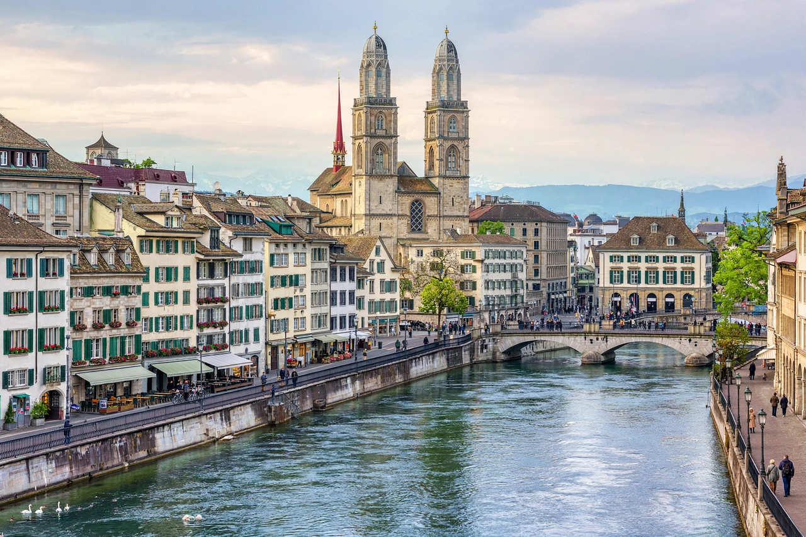

Zurich

| Country | Switzerland |
|---|---|
| Canton | Zurich (capital) |
| Population | ~430,000 (city); ~1.4 million (metro) |
| Lake / river | Lake Zurich / Limmat |
| Language | German (Swiss German dialect) |
| Known for | Banking and finance; FIFA headquarters |
Zurich (German: Zürich) is the largest city in Switzerland and the capital of the canton of Zurich. It is located in north-central Switzerland, at the northwestern tip of Lake Zurich, where the River Limmat flows out of the lake. The municipality has a population of roughly 430,000, with about 1.4 million in the metropolitan area.
History
The area has been settled for more than 2,000 years; the Romans established a customs post called Turicum. Zurich joined the Swiss Confederacy in 1351. In the 1520s, under Huldrych Zwingli, it became a centre of the Protestant Reformation. The city's medieval guilds long dominated its economy and politics.
Economy
Zurich is a global centre for banking and finance. The Greater Zurich Area is home to the Swiss National Bank, the headquarters of UBS and other major banks (Credit Suisse was absorbed by UBS in 2023), insurers such as Zurich Insurance Group and Swiss Re, and the SIX Swiss Exchange. Bahnhofstrasse is one of the world's most exclusive shopping avenues. The city also hosts the headquarters of FIFA, world football's governing body.
Education and culture
The University of Zurich and ETH Zurich — one of the world's leading science and technology universities, associated with numerous Nobel laureates including Albert Einstein — anchor a strong research sector. The old town (Altstadt) lines both banks of the Limmat, with landmarks such as the Grossmünster, Fraumünster (with stained glass by Marc Chagall) and St Peter's, whose clock face is among Europe's largest. Zurich regularly ranks at or near the top of global quality-of-life surveys.